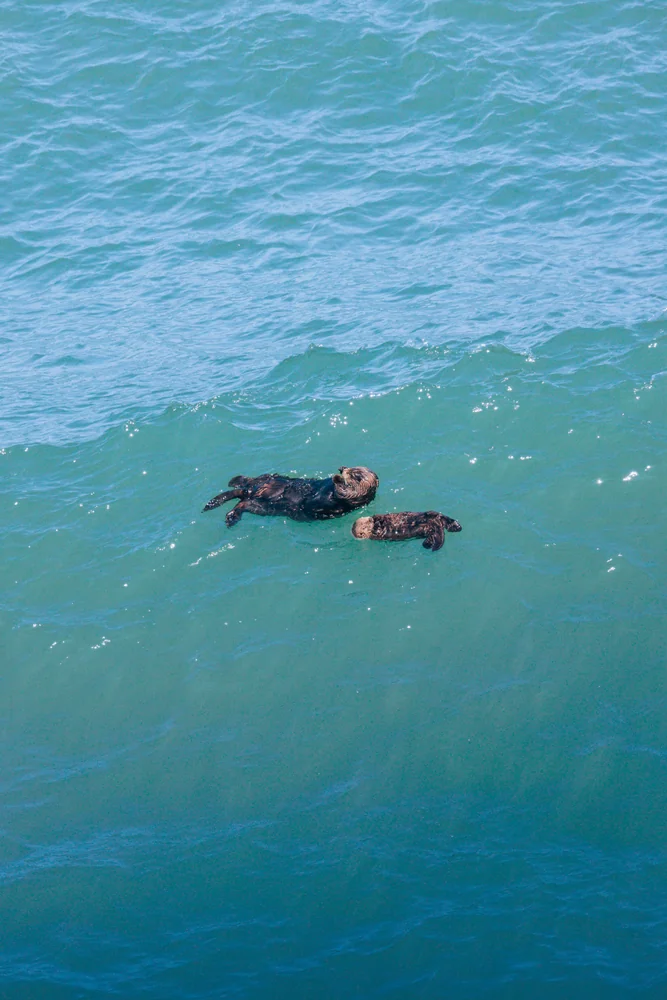
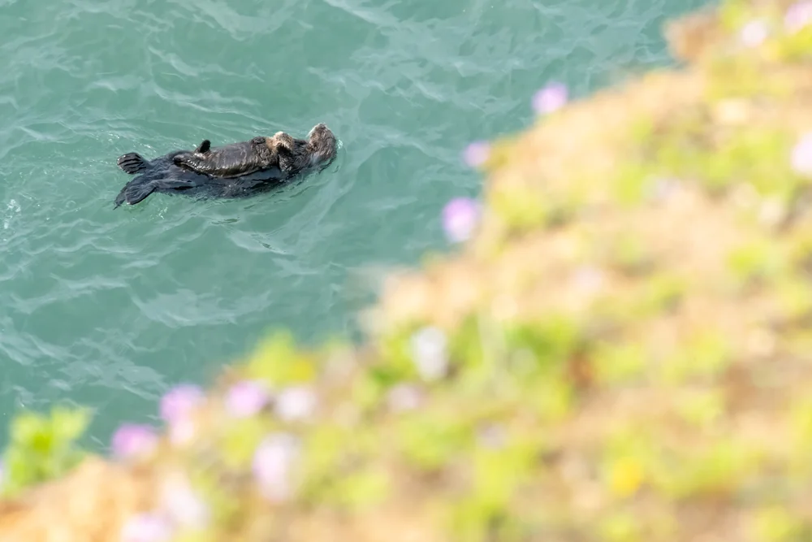
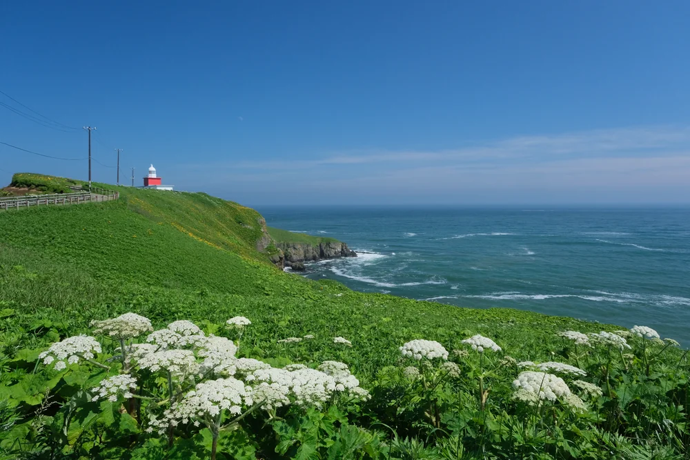
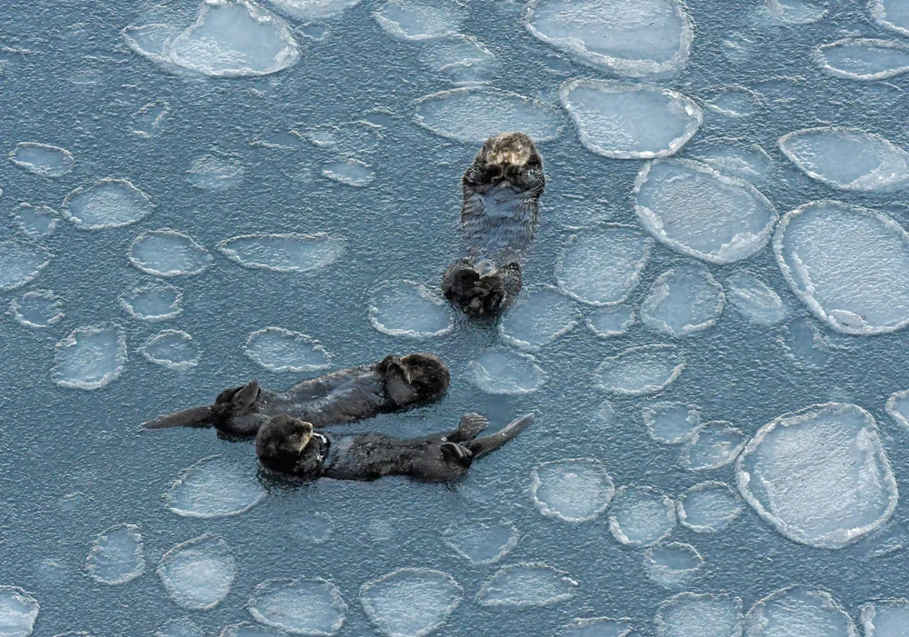
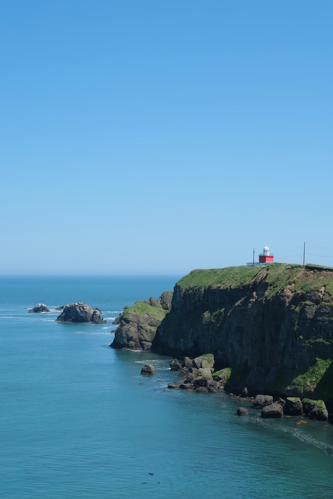

WILDLIFE
野生動物
野生のラッコをはじめ、タンチョウ、エゾシカ、キタキツネ、さまざまな野鳥。人の暮らしのすぐそばに、豊かな野生があります。
INTRODUCTION
北海道東部、太平洋に面した浜中町。海と湿原、野生動物と人の暮らしが近い距離にあり、季節や時間、天候によってまったく違う表情に出会えます。
WHY HAMANAKA
浜中町には、太平洋に突き出す岬、霧多布湿原、広い牧草地、漁港や昆布干場など、海・湿原・暮らしの風景が近い距離にあります。
そして、その海には野生のラッコが暮らしています。ラッコをきっかけに浜中町を知り、町を歩くうちに、季節や時間、天候によって変わる多様な被写体に出会える。それが浜中町で写真を撮る面白さです。

PHOTO SUBJECTS
ラッコを入口に、その先へ。海、湿原、野生動物、産業や暮らし、季節の移ろいまで、浜中町にはカメラを向けたくなる風景があります。

WILDLIFE
野生のラッコをはじめ、タンチョウ、エゾシカ、キタキツネ、さまざまな野鳥。人の暮らしのすぐそばに、豊かな野生があります。

COAST
太平洋、霧多布岬、切り立つ断崖、灯台、波。光や霧によって、同じ場所でも異なる表情を見せます。
WETLAND
霧多布湿原を彩る季節の花、朝夕の光、霧、空、野鳥。広い風景にも、小さな足元にも被写体があります。
LIFE
酪農、昆布漁、港、牧草地。観光地だけではない日常の風景にも、浜中町らしさが息づいています。

SEASON
春の芽吹き、夏の花と霧、秋の光、雪に包まれる冬。天候や季節の変化そのものが、写真の表情を変えていきます。

THROUGH THE LENS
同じ岬でも、晴れた日と霧の日ではまったく違う。いつもの牧草地も、光や季節が変われば新しい景色になる。野生動物の一瞬の表情や、暮らしの中にある何気ない風景も、写真に残すことで浜中町らしさとして見えてきます。
HAMANAKA PHOTOが届けたいのは、名所の一覧だけではありません。写真をきっかけに町を見る視点が増え、それぞれの人が自分だけの浜中町を見つけていくことです。
TOWN PROMOTION
HAMANAKA PHOTOは、写真を見せるだけのサイトではありません。写真を入口に浜中町を知り、訪れ、撮影し、その魅力を誰かに伝える。そんな循環を育てるためのフォトポータルです。
写真展、フォトギャラリー、フォトガイド、撮影イベント、フォトコンテスト、SNSでの発信など。さまざまな取り組みを一つの場所に蓄積し、写真を通した浜中町のタウンプロモーションを続けていきます。
START HERE
気になる入口から、HAMANAKA PHOTOをめぐってみてください。